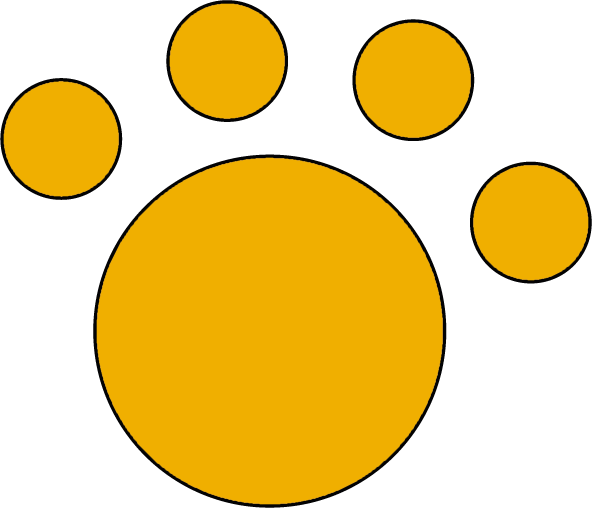
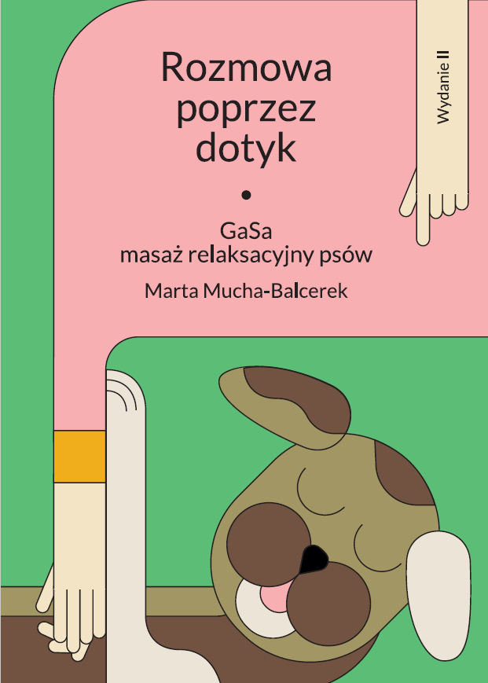
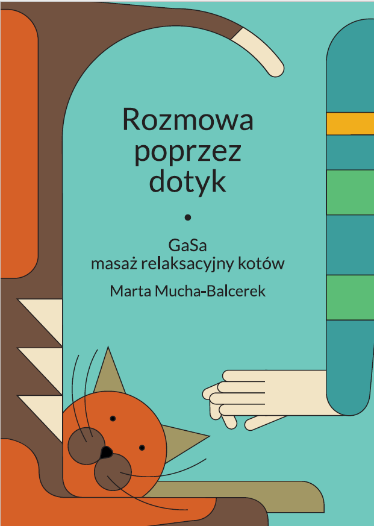
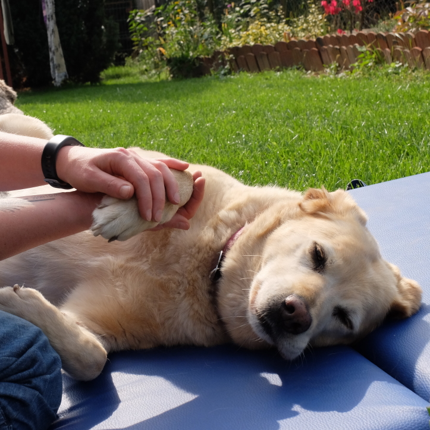
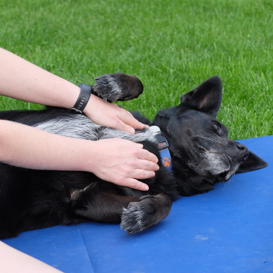
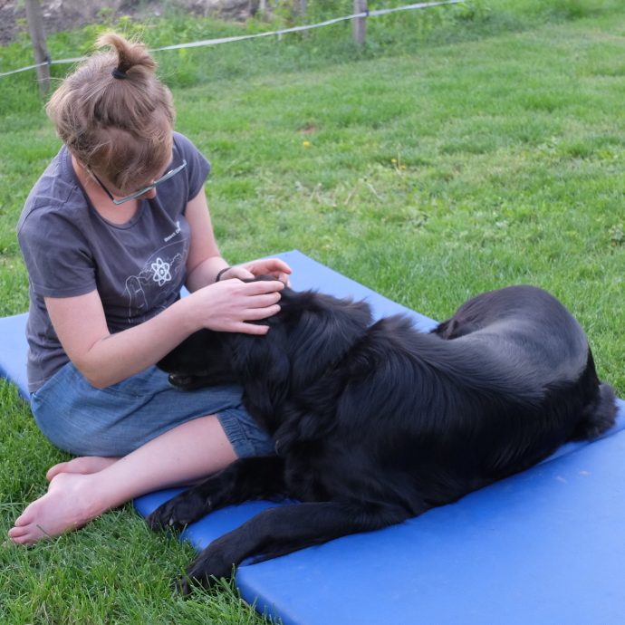

WHAT IS GaSa MASSAGE?
It is an animal relaxation massage that helps you learn what kind of contact your pet enjoys.
It is an ongoing dialog, a time to practice attentiveness and openness to the dog.
GaSa is also a way of caring for yourself and your state of
mind,
a way to be HERE and NOW.
BOOKS ON ANIMAL RELAXATION MASSAGE
The GaSa books are not veterinary or animal physiotherapy textbooks—they present a unique approach to animal relaxation massage. The key principle of this technique is to tailor actions to the pet’s specific needs.
"GaSa—Relaxation Massage for Dogs" offers tips and inspiration for creating a relaxing ritual that is best for you and your dog.
Buy on AmazonGaSa
What is in the book?
-

PHILOSOPHY
The books answer such questions as:
- Why are there no "external masseurs" in GaSa?
- Is GaSa possible without touching?
- How can a cuddly toy come in handy?
-
COMMUNICATION
GaSa massage is talking through touch with those it is difficult to communicate with through words.
The book shows you how to observe your pet to recognize and understand the cues they send.
-
TECHNIQUES
You learn the ways to stroke your pet. For educational purposes, they are categorized and organized—but this is not the only valid way to perform them. The book explains that as well.
IMAGES AND INSTRUCTIONAL GRAPHICS
Photos and drawings help you put the techniques into practice.
-
EXPERT COMMENTS
The books are consulted and annotated by a canine therapist, animal physiotherapist and osteopath, animal trainers and, behaviorists.
-
INDICATIONS / CONTRAINDICATIONS
You learn the standard indications and . . .
one KEY contraindication. -
COMPLEMENTARY EXERCISES
Not all techniques are touch-related and some are performed without a dog, with a notebook needed here and there.
All this so you can FEEL more and BE more when you meet with your pet.
About the author
Marta Mucha-Balcerek
Hello!
I am Marta Mucha-Balcerek, the creator of GaSa.
Since 2012, I have been holding the animal relaxation massage workshops. In 2015, I published the first book on this subject.
Building calm and mindful relationships with pets is something that fascinates me, and touch is just one element that can contribute to it.
Marta on Amazon
Books on GaSa massage
-
GaSa
Relaxation Massage for Dogs
$26.86
Buy on Amazon -

GaSa
masaż relaksacyjny psów
75.00 PLN
Buy in PL online shop -

GaSa
masaż relaksacyjny kotów
55.00 PLN
Buy in PL online shop
Book reviews
The books are consulted and annotated by a canine therapist, animal physiotherapist and osteopath, animal trainers and, behaviorists.
See feedback on Amazon
Heard, massaged and, content
GaSa massage techniques help you learn attentive observation. Getting to know your pet better comes with trusting your intuition.
You already have the knowledge. GaSa helps you discover it.
- 
- 
- 